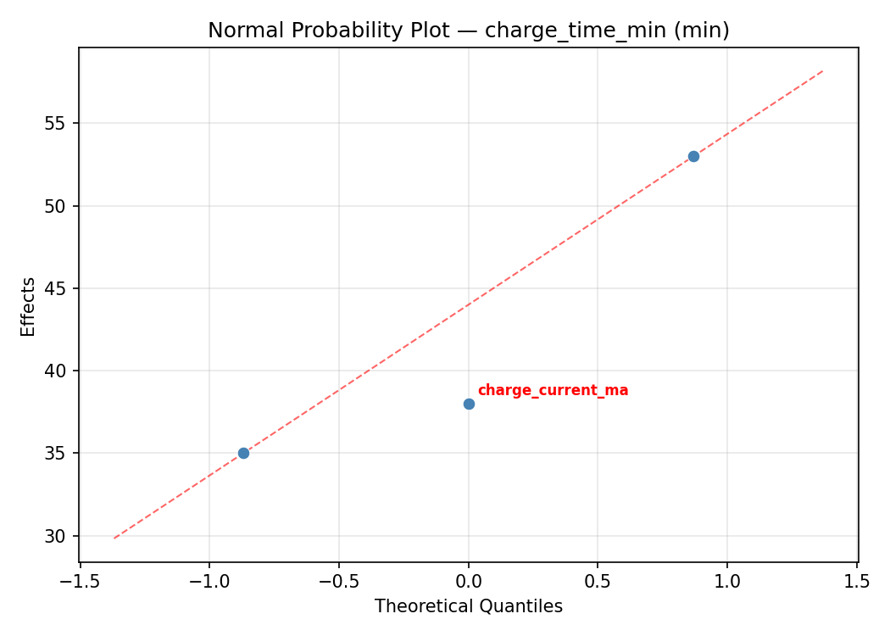
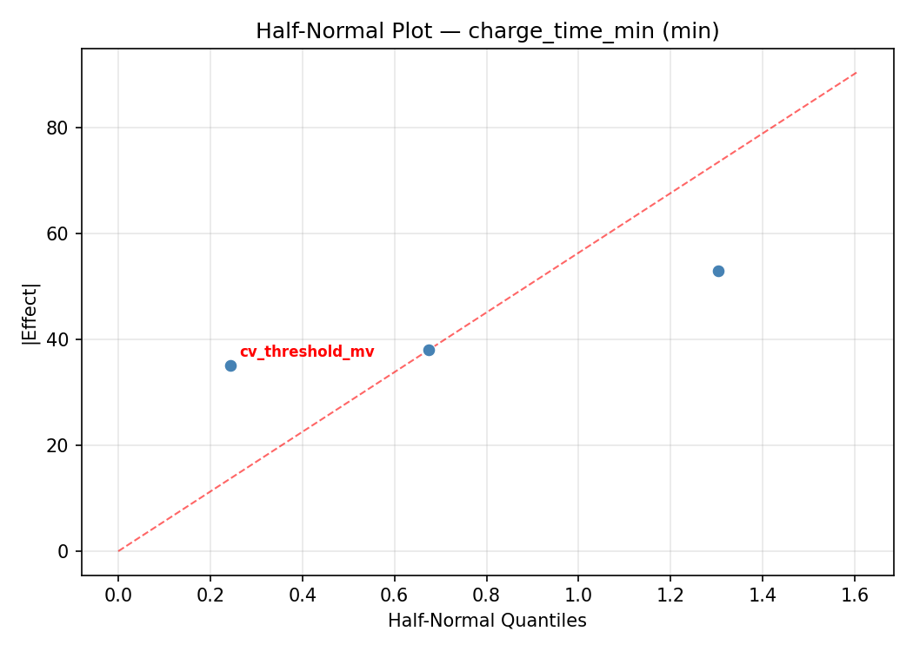
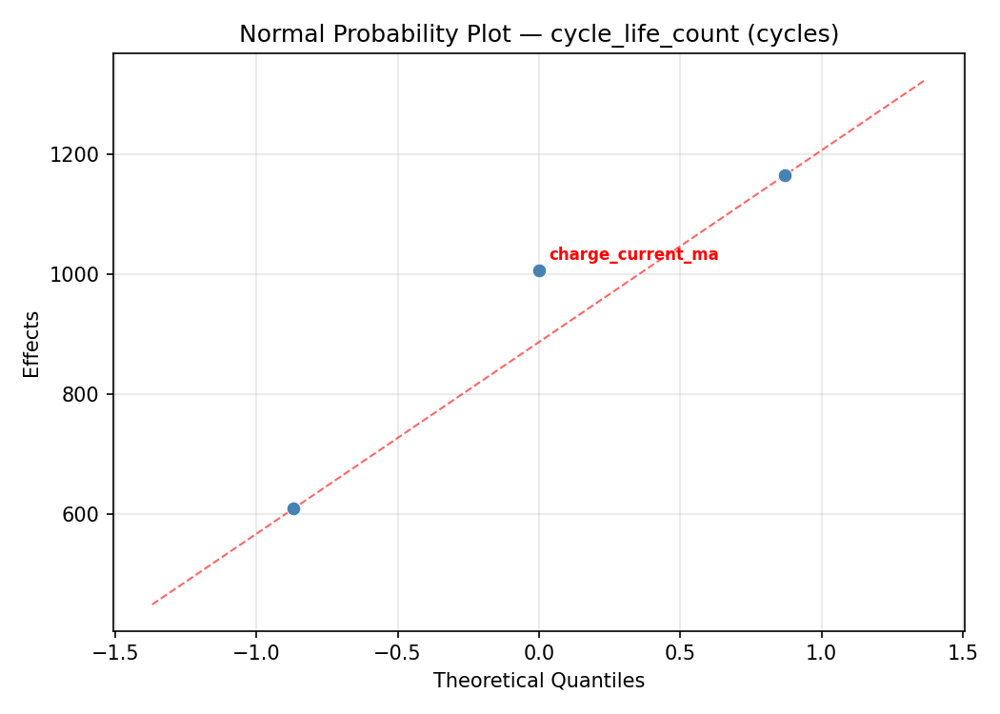
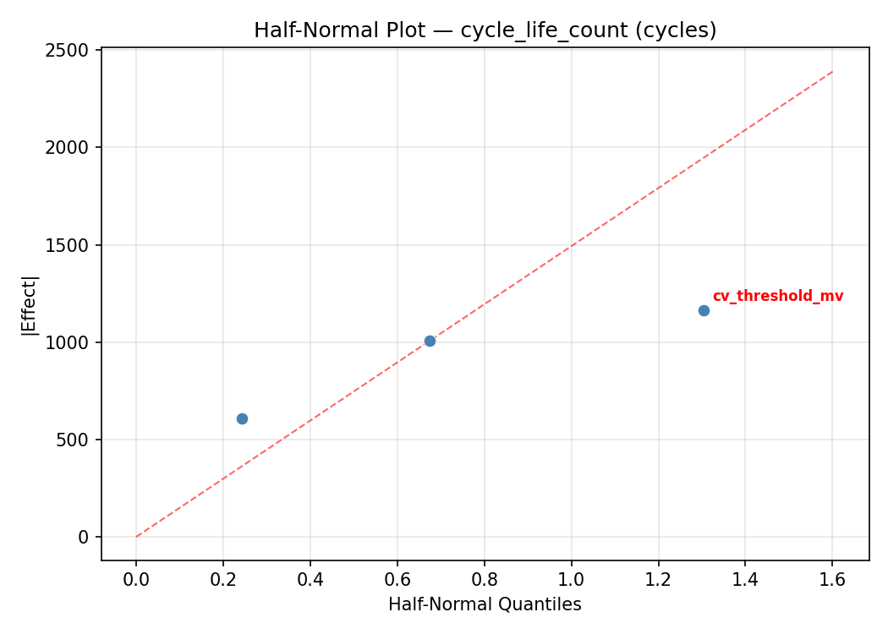

Summary
This experiment investigates battery management charging. Central Composite design to optimize charge current, CV threshold, and trickle cutoff for charge time and cycle life.
The design varies 3 factors: charge current ma (mA), ranging from 500 to 3000, cv threshold mv (mV), ranging from 3400 to 3650, and trickle cutoff mv (mV), ranging from 2800 to 3000. The goal is to optimize 2 responses: charge time min (min) (minimize) and cycle life count (cycles) (maximize). Fixed conditions held constant across all runs include chemistry = lifepo4, cell count = 4s.
A Central Composite Design (CCD) was selected to fit a full quadratic response surface model, including curvature and interaction effects. With 3 factors this produces 22 runs including center points and axial (star) points that extend beyond the factorial range.
Quadratic response surface models were fitted to capture potential curvature and factor interactions. The RSM contour plots below visualize how pairs of factors jointly affect each response.
Key Findings
For charge time min, the most influential factors were trickle cutoff mv (41.2%), cv threshold mv (30.2%), charge current ma (28.6%). The best observed value was 52.0 (at charge current ma = 1750, cv threshold mv = 3525, trickle cutoff mv = 2900).
For cycle life count, the most influential factors were cv threshold mv (43.6%), charge current ma (32.1%), trickle cutoff mv (24.3%). The best observed value was 3325.0 (at charge current ma = 1750, cv threshold mv = 3753.22, trickle cutoff mv = 2900).
Recommended Next Steps
- Run confirmation experiments at the predicted optimal settings to validate the model.
- Consider whether any fixed factors should be varied in a future study.
Experimental Setup
Factors
| Factor | Low | High | Unit |
|---|
charge_current_ma | 500 | 3000 | mA |
cv_threshold_mv | 3400 | 3650 | mV |
trickle_cutoff_mv | 2800 | 3000 | mV |
Fixed: chemistry = lifepo4, cell_count = 4s
Responses
| Response | Direction | Unit |
|---|
charge_time_min | ↓ minimize | min |
cycle_life_count | ↑ maximize | cycles |
Configuration
{
"metadata": {
"name": "Battery Management Charging",
"description": "Central Composite design to optimize charge current, CV threshold, and trickle cutoff for charge time and cycle life"
},
"factors": [
{
"name": "charge_current_ma",
"levels": [
"500",
"3000"
],
"type": "continuous",
"unit": "mA"
},
{
"name": "cv_threshold_mv",
"levels": [
"3400",
"3650"
],
"type": "continuous",
"unit": "mV"
},
{
"name": "trickle_cutoff_mv",
"levels": [
"2800",
"3000"
],
"type": "continuous",
"unit": "mV"
}
],
"fixed_factors": {
"chemistry": "lifepo4",
"cell_count": "4s"
},
"responses": [
{
"name": "charge_time_min",
"optimize": "minimize",
"unit": "min"
},
{
"name": "cycle_life_count",
"optimize": "maximize",
"unit": "cycles"
}
],
"settings": {
"operation": "central_composite",
"test_script": "use_cases/76_battery_management_charging/sim.sh"
}
}
Experimental Matrix
The Central Composite Design produces 22 runs. Each row is one experiment with specific factor settings.
| Run | charge_current_ma | cv_threshold_mv | trickle_cutoff_mv |
|---|
| 1 | 1750 | 3525 | 2900 |
| 2 | 3000 | 3400 | 3000 |
| 3 | 500 | 3650 | 2800 |
| 4 | 1750 | 3753.22 | 2900 |
| 5 | 1750 | 3525 | 2900 |
| 6 | -532.177 | 3525 | 2900 |
| 7 | 1750 | 3525 | 2717.43 |
| 8 | 1750 | 3525 | 2900 |
| 9 | 3000 | 3650 | 2800 |
| 10 | 4032.18 | 3525 | 2900 |
| 11 | 1750 | 3525 | 2900 |
| 12 | 1750 | 3296.78 | 2900 |
| 13 | 1750 | 3525 | 2900 |
| 14 | 500 | 3400 | 3000 |
| 15 | 1750 | 3525 | 2900 |
| 16 | 3000 | 3400 | 2800 |
| 17 | 1750 | 3525 | 3082.57 |
| 18 | 3000 | 3650 | 3000 |
| 19 | 1750 | 3525 | 2900 |
| 20 | 500 | 3400 | 2800 |
| 21 | 500 | 3650 | 3000 |
| 22 | 1750 | 3525 | 2900 |
Step-by-Step Workflow
1
Preview the design
$ python doe.py info --config use_cases/76_battery_management_charging/config.json
2
Generate the runner script
$ python doe.py generate --config use_cases/76_battery_management_charging/config.json \
--output use_cases/76_battery_management_charging/results/run.sh --seed 42
3
Execute the experiments
$ bash use_cases/76_battery_management_charging/results/run.sh
4
Analyze results
$ python doe.py analyze --config use_cases/76_battery_management_charging/config.json
5
Get optimization recommendations
$ python doe.py optimize --config use_cases/76_battery_management_charging/config.json
6
Multi-objective optimization
With 2 competing responses, use --multi to find the best compromise via Derringer–Suich desirability.
$ python doe.py optimize --config use_cases/76_battery_management_charging/config.json --multi
7
Generate the HTML report
$ python doe.py report --config use_cases/76_battery_management_charging/config.json \
--output use_cases/76_battery_management_charging/results/report.html
Features Exercised
| Feature | Value |
|---|
| Design type | central_composite |
| Factor types | continuous (all 3) |
| Arg style | double-dash |
| Responses | 2 (charge_time_min ↓, cycle_life_count ↑) |
| Total runs | 22 |
Analysis Results
Generated from actual experiment runs using the DOE Helper Tool.
Response: charge_time_min
Top factors: trickle_cutoff_mv (41.2%), cv_threshold_mv (30.2%), charge_current_ma (28.6%).
ANOVA
| Source | DF | SS | MS | F | p-value |
|---|
| Source | DF | SS | MS | F | p-value |
| charge_current_ma | 4 | 3045.6061 | 761.4015 | 0.875 | 0.5156 |
| cv_threshold_mv | 4 | 2130.0227 | 532.5057 | 0.612 | 0.6648 |
| trickle_cutoff_mv | 4 | 2557.3561 | 639.3390 | 0.734 | 0.5912 |
| Lack | of | Fit | 2 | 2812.2879 | 1406.1439 |
| Pure | Error | 7 | 6094.0000 | | |
| Error | 9 | 8906.2879 | 870.5714 | | |
| Total | 21 | 16639.2727 | 792.3463 | | |
Pareto Chart

Main Effects Plot

Normal Probability Plot of Effects

Half-Normal Plot of Effects

Model Diagnostics

Response: cycle_life_count
Top factors: cv_threshold_mv (43.6%), charge_current_ma (32.1%), trickle_cutoff_mv (24.3%).
ANOVA
| Source | DF | SS | MS | F | p-value |
|---|
| Source | DF | SS | MS | F | p-value |
| charge_current_ma | 4 | 912805.7879 | 228201.4470 | 0.862 | 0.5221 |
| cv_threshold_mv | 4 | 706839.7045 | 176709.9261 | 0.667 | 0.6306 |
| trickle_cutoff_mv | 4 | 654645.7879 | 163661.4470 | 0.618 | 0.6609 |
| Lack | of | Fit | 2 | 668596.2992 | 334298.1496 |
| Pure | Error | 7 | 1853781.8750 | | |
| Error | 9 | 2522378.1742 | 264825.9821 | | |
| Total | 21 | 4796669.4545 | 228412.8312 | | |
Pareto Chart

Main Effects Plot

Normal Probability Plot of Effects

Half-Normal Plot of Effects

Model Diagnostics

Response Surface Plots
3D surfaces fitted with quadratic RSM. Red dots are observed data points.
charge time min charge current ma vs cv threshold mv

charge time min charge current ma vs trickle cutoff mv

charge time min cv threshold mv vs trickle cutoff mv

cycle life count charge current ma vs cv threshold mv

cycle life count charge current ma vs trickle cutoff mv

cycle life count cv threshold mv vs trickle cutoff mv

Multi-Objective Optimization
When responses compete, Derringer–Suich desirability finds the best compromise.
Each response is scaled to a 0–1 desirability, then combined via a weighted geometric mean.
Overall Desirability
D = 0.7498
Per-Response Desirability
| Response | Weight | Desirability | Predicted | Dir |
|---|
charge_time_min |
1.0 |
|
80.00 0.7424 80.00 min |
↓ |
cycle_life_count |
1.5 |
|
2903.00 0.7548 2903.00 cycles |
↑ |
Recommended Settings
| Factor | Value |
|---|
charge_current_ma | 1750 mA |
cv_threshold_mv | 3525 mV |
trickle_cutoff_mv | 2900 mV |
Source: from observed run #12
Trade-off Summary
Sacrifice = how much worse than single-objective best.
| Response | Predicted | Best Observed | Sacrifice |
|---|
cycle_life_count | 2903.00 | 3325.00 | +422.00 |
Top 3 Runs by Desirability
| Run | D | Factor Settings |
|---|
| #2 | 0.6142 | charge_current_ma=1750, cv_threshold_mv=3525, trickle_cutoff_mv=2900 |
| #20 | 0.6028 | charge_current_ma=500, cv_threshold_mv=3650, trickle_cutoff_mv=3000 |
Model Quality
| Response | R² | Type |
|---|
cycle_life_count | 0.4698 | quadratic |
Full Multi-Objective Output
============================================================
MULTI-OBJECTIVE OPTIMIZATION
Method: Derringer-Suich Desirability Function
============================================================
Overall desirability: D = 0.7498
Response Weight Desirability Predicted Direction
---------------------------------------------------------------------
charge_time_min 1.0 0.7424 80.00 min ↓
cycle_life_count 1.5 0.7548 2903.00 cycles ↑
Recommended settings:
charge_current_ma = 1750 mA
cv_threshold_mv = 3525 mV
trickle_cutoff_mv = 2900 mV
(from observed run #12)
Trade-off summary:
charge_time_min: 80.00 (best observed: 52.00, sacrifice: +28.00)
cycle_life_count: 2903.00 (best observed: 3325.00, sacrifice: +422.00)
Model quality:
charge_time_min: R² = 0.0607 (linear)
cycle_life_count: R² = 0.4698 (quadratic)
Top 3 observed runs by overall desirability:
1. Run #12 (D=0.7498): charge_current_ma=1750, cv_threshold_mv=3525, trickle_cutoff_mv=2900
2. Run #2 (D=0.6142): charge_current_ma=1750, cv_threshold_mv=3525, trickle_cutoff_mv=2900
3. Run #20 (D=0.6028): charge_current_ma=500, cv_threshold_mv=3650, trickle_cutoff_mv=3000
Full Analysis Output
=== Main Effects: charge_time_min ===
Factor Effect Std Error % Contribution
--------------------------------------------------------------
trickle_cutoff_mv 50.5000 6.0013 41.2%
cv_threshold_mv 37.0000 6.0013 30.2%
charge_current_ma 35.0000 6.0013 28.6%
=== ANOVA Table: charge_time_min ===
Source DF SS MS F p-value
-----------------------------------------------------------------------------
charge_current_ma 4 3045.6061 761.4015 0.875 0.5156
cv_threshold_mv 4 2130.0227 532.5057 0.612 0.6648
trickle_cutoff_mv 4 2557.3561 639.3390 0.734 0.5912
Lack of Fit 2 2812.2879 1406.1439 1.615 0.2650
Pure Error 7 6094.0000 870.5714
Error 9 8906.2879 870.5714
Total 21 16639.2727 792.3463
=== Summary Statistics: charge_time_min ===
charge_current_ma:
Level N Mean Std Min Max
------------------------------------------------------------
-532.177 1 87.0000 0.0000 87.0000 87.0000
1750 12 92.3333 26.1163 52.0000 142.0000
3000 4 122.0000 39.4039 89.0000 172.0000
4032.18 1 93.0000 0.0000 93.0000 93.0000
500 4 90.5000 21.8556 63.0000 116.0000
cv_threshold_mv:
Level N Mean Std Min Max
------------------------------------------------------------
3296.78 1 80.0000 0.0000 80.0000 80.0000
3400 4 117.0000 38.6954 88.0000 172.0000
3525 12 93.2500 25.8637 52.0000 142.0000
3650 4 95.5000 29.7714 63.0000 135.0000
3753.22 1 89.0000 0.0000 89.0000 89.0000
trickle_cutoff_mv:
Level N Mean Std Min Max
------------------------------------------------------------
2717.43 1 83.0000 0.0000 83.0000 83.0000
2800 4 114.5000 48.5833 63.0000 172.0000
2900 12 95.0833 24.4036 52.0000 142.0000
3000 4 98.0000 12.2474 89.0000 116.0000
3082.57 1 64.0000 0.0000 64.0000 64.0000
=== Main Effects: cycle_life_count ===
Factor Effect Std Error % Contribution
--------------------------------------------------------------
cv_threshold_mv 947.0000 101.8941 43.6%
charge_current_ma 698.0000 101.8941 32.1%
trickle_cutoff_mv 528.5000 101.8941 24.3%
=== ANOVA Table: cycle_life_count ===
Source DF SS MS F p-value
-----------------------------------------------------------------------------
charge_current_ma 4 912805.7879 228201.4470 0.862 0.5221
cv_threshold_mv 4 706839.7045 176709.9261 0.667 0.6306
trickle_cutoff_mv 4 654645.7879 163661.4470 0.618 0.6609
Lack of Fit 2 668596.2992 334298.1496 1.262 0.3403
Pure Error 7 1853781.8750 264825.9821
Error 9 2522378.1742 264825.9821
Total 21 4796669.4545 228412.8312
=== Summary Statistics: cycle_life_count ===
charge_current_ma:
Level N Mean Std Min Max
------------------------------------------------------------
-532.177 1 1677.0000 0.0000 1677.0000 1677.0000
1750 12 2256.1667 482.2432 1404.0000 2937.0000
3000 4 2375.0000 654.5334 1916.0000 3325.0000
4032.18 1 2067.0000 0.0000 2067.0000 2067.0000
500 4 1853.0000 116.1579 1685.0000 1940.0000
cv_threshold_mv:
Level N Mean Std Min Max
------------------------------------------------------------
3296.78 1 2903.0000 0.0000 2903.0000 2903.0000
3400 4 2224.7500 743.8998 1685.0000 3325.0000
3525 12 2163.2500 458.9777 1404.0000 2937.0000
3650 4 2003.2500 193.5654 1867.0000 2290.0000
3753.22 1 1956.0000 0.0000 1956.0000 1956.0000
trickle_cutoff_mv:
Level N Mean Std Min Max
------------------------------------------------------------
2717.43 1 1822.0000 0.0000 1822.0000 1822.0000
2800 4 2350.5000 676.3660 1867.0000 3325.0000
2900 12 2221.1667 497.1550 1404.0000 2937.0000
3000 4 1877.5000 130.1499 1685.0000 1969.0000
3082.57 1 2342.0000 0.0000 2342.0000 2342.0000
Optimization Recommendations
=== Optimization: charge_time_min ===
Direction: minimize
Best observed run: #16
charge_current_ma = 1750
cv_threshold_mv = 3525
trickle_cutoff_mv = 2900
Value: 52.0
RSM Model (linear, R² = 0.0305, Adj R² = -0.1311):
Coefficients:
intercept +97.1818
charge_current_ma -0.3347
cv_threshold_mv +5.8114
trickle_cutoff_mv -0.8439
RSM Model (quadratic, R² = 0.4837, Adj R² = 0.0966):
Coefficients:
intercept +83.0897
charge_current_ma -0.3347
cv_threshold_mv +5.8114
trickle_cutoff_mv -0.8439
charge_current_ma*cv_threshold_mv -18.3750
charge_current_ma*trickle_cutoff_mv -9.8750
cv_threshold_mv*trickle_cutoff_mv +3.1250
charge_current_ma^2 +2.0960
cv_threshold_mv^2 +13.3458
trickle_cutoff_mv^2 +5.6962
Curvature analysis:
cv_threshold_mv coef=+13.3458 convex (has a minimum)
trickle_cutoff_mv coef=+5.6962 convex (has a minimum)
charge_current_ma coef=+2.0960 convex (has a minimum)
Notable interactions:
charge_current_ma*cv_threshold_mv coef=-18.3750 (antagonistic)
charge_current_ma*trickle_cutoff_mv coef=-9.8750 (antagonistic)
cv_threshold_mv*trickle_cutoff_mv coef=+3.1250 (synergistic)
Predicted optimum (from quadratic model, at observed points):
charge_current_ma = 500
cv_threshold_mv = 3650
trickle_cutoff_mv = 3000
Predicted value: 140.9051
Surface optimum (via L-BFGS-B, quadratic model):
charge_current_ma = 500
cv_threshold_mv = 3419.96
trickle_cutoff_mv = 2843.78
Predicted value: 72.8196
Model quality: Weak fit — consider adding center points or using a different design.
Factor importance:
1. cv_threshold_mv (effect: 82.7, contribution: 61.7%)
2. trickle_cutoff_mv (effect: 38.0, contribution: 28.4%)
3. charge_current_ma (effect: 13.2, contribution: 9.9%)
=== Optimization: cycle_life_count ===
Direction: maximize
Best observed run: #6
charge_current_ma = 1750
cv_threshold_mv = 3753.22
trickle_cutoff_mv = 2900
Value: 3325.0
RSM Model (linear, R² = 0.0602, Adj R² = -0.0965):
Coefficients:
intercept +2169.5454
charge_current_ma +79.7528
cv_threshold_mv +100.2131
trickle_cutoff_mv -57.2403
RSM Model (quadratic, R² = 0.4184, Adj R² = -0.0178):
Coefficients:
intercept +1990.7700
charge_current_ma +79.7529
cv_threshold_mv +100.2131
trickle_cutoff_mv -57.2403
charge_current_ma*cv_threshold_mv -119.3750
charge_current_ma*trickle_cutoff_mv -164.8750
cv_threshold_mv*trickle_cutoff_mv +266.6250
charge_current_ma^2 -14.7123
cv_threshold_mv^2 +175.6351
trickle_cutoff_mv^2 +107.2411
Curvature analysis:
cv_threshold_mv coef=+175.6351 convex (has a minimum)
trickle_cutoff_mv coef=+107.2411 convex (has a minimum)
charge_current_ma coef=-14.7123 concave (has a maximum)
Notable interactions:
cv_threshold_mv*trickle_cutoff_mv coef=+266.6250 (synergistic)
charge_current_ma*trickle_cutoff_mv coef=-164.8750 (antagonistic)
charge_current_ma*cv_threshold_mv coef=-119.3750 (antagonistic)
Predicted optimum (from quadratic model, at observed points):
charge_current_ma = 3000
cv_threshold_mv = 3400
trickle_cutoff_mv = 2800
Predicted value: 2846.5889
Surface optimum (via L-BFGS-B, quadratic model):
charge_current_ma = 3000
cv_threshold_mv = 3400
trickle_cutoff_mv = 2800
Predicted value: 2846.5889
Model quality: Weak fit — consider adding center points or using a different design.
Factor importance:
1. cv_threshold_mv (effect: 1269.2, contribution: 47.7%)
2. trickle_cutoff_mv (effect: 938.0, contribution: 35.2%)
3. charge_current_ma (effect: 455.8, contribution: 17.1%)